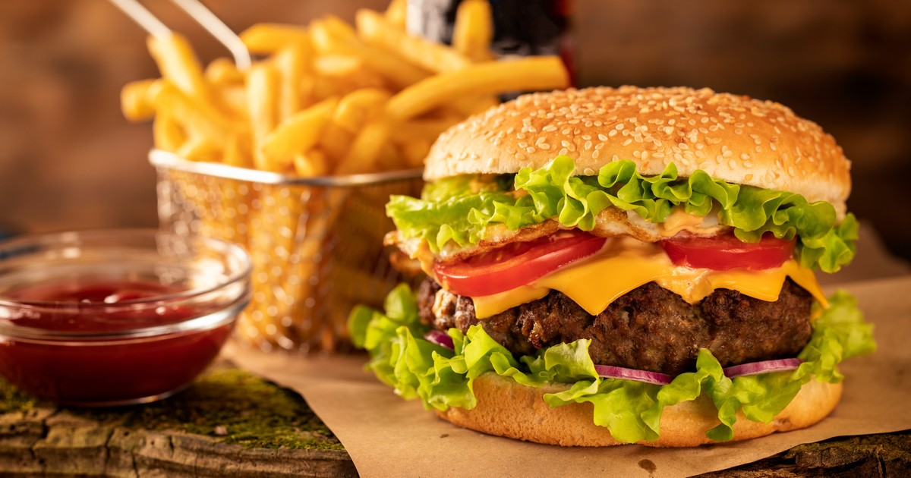

Bienvenidos a Hamburgalia
Hamburgalia es una hamburguesería inspirada en una idea familiar y desarrollada con un estilo propio.
Nuestro objetivo es ofrecer hamburguesas ricas y de calidad, en un ambiente cómodo y moderno.
Lo que hace especial a Hamburgalia es la combinación de sabores, la atención y el cuidado en cada
detalle.
Nuestras hamburguesas
Clásica
Carne, queso cheddar, lechuga, tomate y cebolla.

Doble BBQ
Doble carne, doble queso y salsa especial.

Especial
Doble carne, doble queso y crocante bacon

Datos curiosos
- La hamburguesa es una de las comidas más populares del mundo.
- El queso cheddar es uno de los ingredientes más utilizados.
- Existen versiones vegetarianas y veganas.
Conocé más sobre la historia de las hamburguesas en: Wikipedia
Contacto
Mandanos tus consultas o quejas a nuestro contacto: hamburgaliaOK@gmail.com